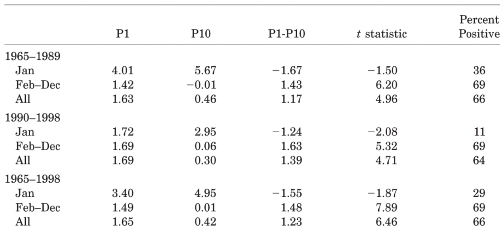
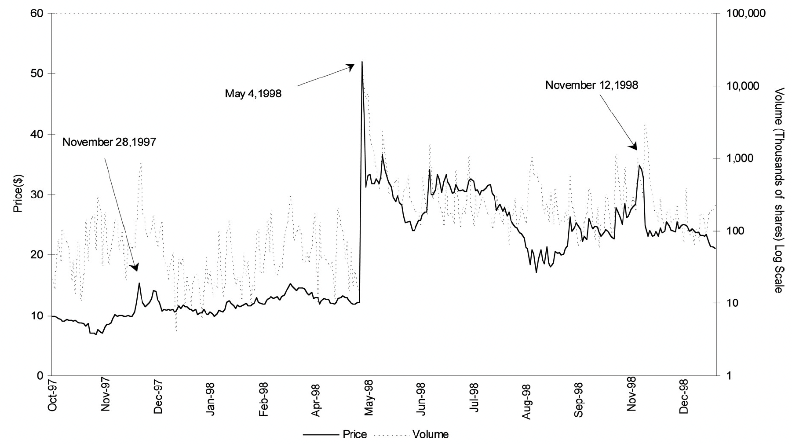
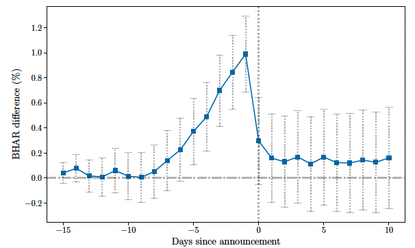

Prior to the 1950s it was generally believed among practitioners that the use of fundamental or technical approaches could “beat the market”.
In the 1950s and 1960s studies (particularly Eugene Fama and Paul Samuelson) began to provide evidence against this view.
In particular, researchers found that stock returns (not prices themselves) followed a“random walk” and are unpredictable.
Efficient Market Hypothesis (EMH)
Professor Eugene Fama defined market efficiency as follows:
In an efficient market, competition among the many intelligent participants leads to a situation where, at any point in time, actual prices of individual securities already reflect the effects of information based both on events that have already occurred and on events which, as of now, the market expects to take place in the future.
I.e., prices of stocks observed at any time are based on “correct” evaluation of all information available. The price of a stock will be a good estimate of its intrinsic value.
Therefore, prices reflect fundamentals and you can’t make money on forecasting or buying (selling) an undervalued (overvalued) stocks.
Three Forms of Market Efficiency
Frictions to Market Efficiency
We will now discuss some of the main frictions that can prevent markets from being efficient. We can classify these frictions into two main categories:
Behavioral biases
Transaction costs and other market frictions
Behavioral Biases
Conservatism (anchoring) bias: Investors often update their beliefs too slowly when new information arrives. They anchor to prior views and require multiple confirming signals before fully adjusting their valuations. This causes prices to drift gradually toward fundamental values rather than jumping immediately.
Limited attention: Investors can’t process all available information simultaneously. They focus on salient news while neglecting subtle signals embedded in financial statements, regulatory filings, or broader market patterns. Information that’s harder to process gets incorporated more slowly.
More in line with bounded rationality than irrationality.
Overconfidence and disposition effects: Some investors hold losing positions too long (unwilling to realize losses) or sell winners too quickly, preventing efficient price discovery. Overconfident traders may also ignore contradictory information, slowing the market’s collective learning process.
Sentiment and feedback effects: Positive feedback loops can cause gradual price trends as momentum attracts more buyers, while negative sentiment spreads slowly through social networks and media coverage.
Transaction Costs and Other Market Frictions
Transaction costs: Trading isn’t free. When arbitrage opportunities are small relative to commissions, spreads, and price impact costs, sophisticated traders won’t eliminate mispricings quickly.
Short-sale constraints: If a stock is overvalued but hard or expensive to borrow, pessimistic traders can’t easily push prices down. This asymmetry allows overpricing to persist.
Limits to arbitrage: Even when mispricings are identified, risk-averse arbitrageurs face constraints. They may lack capital, face margin requirements, or worry about prices moving further against them before converging (noise trader risk). This prevents immediate correction.
Information costs: Gathering and analyzing information requires resources. Smaller stocks or less-covered markets may experience slower price discovery simply because fewer professionals find it profitable to research them.
Institutional constraints: Regulations, investment mandates, and agency problems can prevent funds from quickly exploiting opportunities, even when they’re aware of them.
Weak Form Market Efficiency
Weak form efficiency states that current prices already reflect all information contained in historical prices and trading volume.
Implications:
Past price patterns cannot predict future returns
Technical analysis should not generate excess returns
Stock returns should follow a random walk
Let’s test this empirically using S&P 500 data!
Testing Random Walk: Python Example
We’ll test whether monthly S&P 500 returns follow a random walk by checking for autocorrelation:
import yfinance as yfimport pandas as pdimport numpy as npimport matplotlib.pyplot as pltfrom statsmodels.stats.diagnostic import acorr_ljungboxfrom statsmodels.graphics.tsaplots import plot_acf# Download S&P 500 data (monthly)sp500 = yf.download('^GSPC', start='1990-01-01', end='2024-12-31', interval='1mo', progress=False)# Calculate monthly returnsreturns = sp500['Close'].pct_change().dropna()returns.name ='Monthly Returns'print(f"Sample period: {returns.index[0].date()} to {returns.index[-1].date()}")print(f"Number of observations: {len(returns)}")print(f"\nDescriptive Statistics:")print(f"Mean return: {float(returns.mean()):.4f} ({float(returns.mean())*12:.2%} annualized)")print(f"Std deviation: {float(returns.std()):.4f} ({float(returns.std())*np.sqrt(12):.2%} annualized)")print(f"Skewness: {float(returns.skew()):.4f}")print(f"Kurtosis: {float(returns.kurtosis()):.4f}")
Sample period: 1990-02-01 to 2024-12-01
Number of observations: 419
Descriptive Statistics:
Mean return: 0.0078 (9.39% annualized)
Std deviation: 0.0427 (14.78% annualized)
Skewness: -0.5489
Kurtosis: 1.0389
Testing Random Walk: Autocorrelation Test
Ljung-Box Test
The Ljung-Box test is a statistical test that checks whether any of a group of autocorrelations of a time series are different from zero.
where n is the sample size, m is the number of lags tested, and \hat{\rho}_k is the sample autocorrelation at lag k.
Null Hypothesis (H₀): No autocorrelation exists in the time series (returns are unpredictable)
Alternative Hypothesis (H₁): Autocorrelation exists at one or more lags (returns are predictable)
Interpretation: If p-value > 0.05, we fail to reject H₀, suggesting returns follow a random walk
Under H₀, Q(m) \sim \chi^2(m)
Testing Random Walk: Autocorrelation Test
# Test for autocorrelation using Ljung-Box testlb_test = acorr_ljungbox(returns, lags=12, return_df=True)print("Ljung-Box Test for Autocorrelation (H0: No autocorrelation)")print(lb_test.head(6))print(f"\nInterpretation: If p-values > 0.05, we fail to reject H0")print(f"This suggests returns are NOT predictable (consistent with random walk)")
Ljung-Box Test for Autocorrelation (H0: No autocorrelation)
lb_stat lb_pvalue
1 0.071068 0.789788
2 0.790338 0.673566
3 2.087599 0.554426
4 2.296040 0.681490
5 2.652196 0.753420
6 4.762381 0.574631
Interpretation: If p-values > 0.05, we fail to reject H0
This suggests returns are NOT predictable (consistent with random walk)
See this HTML file for more details on the variance ratio tests.
Testing Random Walk: Variance Ratio Test
def variance_ratio(returns, lag=2):""" Calculate variance ratio test statistic. Under random walk, VR should be close to 1. """ n =len(returns)# Variance of 1-period returns var_1 = np.var(returns, ddof=1)# Variance of k-period returns returns_k = returns.rolling(window=lag).sum().dropna() var_k = np.var(returns_k, ddof=1)# Variance ratio vr = var_k / (lag * var_1)return vrprint("Variance Ratio Test Results:")print("(Under random walk, VR should be close to 1.0)\n")for lag in [2, 4, 8, 12]: vr = variance_ratio(returns, lag)print(f"VR({lag}): {float(vr):.4f}")print(f"\nConclusion: VR close to 1.0 suggests random walk behavior")print(f"VR > 1 suggests positive autocorrelation (momentum)")print(f"VR < 1 suggests negative autocorrelation (mean reversion)")
Variance Ratio Test Results:
(Under random walk, VR should be close to 1.0)
VR(2): 0.9887
VR(4): 0.9733
VR(8): 1.0255
VR(12): 1.0965
Conclusion: VR close to 1.0 suggests random walk behavior
VR > 1 suggests positive autocorrelation (momentum)
VR < 1 suggests negative autocorrelation (mean reversion)
Another test for random walk
In the assignment, I ask you to run a simple OLS regression of the form: r_t = \alpha + \beta r_{t-1} + \epsilon_t
If returns follow a random walk, we expect \beta = 0
If we find \beta \neq 0, it suggests returns are predictable and violate weak form market efficiency.
Other factors can predict market returns …
Price-to-dividend ratios was shown to predict market returns in the long run (Fama and French, 1988). Regression:
But, these results are in-sample. Do you know the difference between in- and out-of-sample?
For those that want to learn more about predictability, see Goyal and Welch (2008) and Goyal, Welch, and Zafirov (2021).
Contrarian and Momentum Strategies
Momentum and contrarian are classic cross-sectional strategies that exploit return predictability.
Contrarian strategies: Buy the past losers (bottom quintile or decile) and sell the past winner based on past 3-5 year returns (top quintile ordecile) and hold for a period of 3-5 years. You then repeat. See De Bondt and Thaler(1985).
Momentum strategies: Rank stocks based on past performance, e.g., 3 to 12 month past returns, and buy the past winners (top decile or quintile) and sell the past losers (bottom decile or quintile) and hold your position for a period of 3-12 months (trend). You then repeat.
De Bondt and Thaler Contrarian Findings
De Bondt and Thaler (1985) were the first to find evidence of inefficiencies usingcontrarian strategies.
At each 3-year interval, rank stocks in decile based on their historical 36 monthperformance.
Buy stocks that did the worst in the last 3 years (bottom decile) and short-sell stocks that did the best in the last 3 years (top decile).
Hold the portfolio for 3 years.
De Bondt and Thaler Findings
De Bondt and Thaler Findings
Loser portfolios outperform the market by, on average, 19.6%,thirty-six months after portfolio formation. Winner portfolios, on the other hand, earn about 5% less than the market.
How do we measure outperformance? Using cumulative average residuals (CAR):
where E[R_{i,\tau}] is the expected return based on a market model. It can also be just the market return.
The difference in cumulative average returns (CAR) between the extreme portfolios equals 24.6%.
How to compute BHAR or CAR is also part of the assignment!
Momentum Strategies
Jegadeesh & Titman (2001) show that momentum profits formed on the basis of buying the top decile and selling the bottom decile ranked on the past 6mth returns is about 1% per mth both before 1990 and after 1990 for a holding period of from 6mth-1yr.
Small firms have high momentum than large firms (1.42% vs. 0.86% per month for the 1965-1998 period.)
The momentum only appears in non-January months. In January, the momentum profit is actually negative.
If you go back to the De Bondt and Thaler (1985) figure, you will find evidence of momentum in the first 6 months after portfolio formation.
The momentum profit cannot be explained by risks such as the CAPM or the Fama-French three-factor model. More explications on this later.
Jegadeesh & Titman Findings
Are you able to interpret this table?
Jegadeesh & Titman Findings

Notice the January effect. Why is P1-P10 negative on January?
Semi-strong Form Market Efficiency
Semi-strong form market efficiency states that all publicly available information is already reflected in stock prices.
Event studies are commonly used to test semi-strong form efficiency by examining how quickly and accurately stock prices adjust to new public information.
How are event studies conducted?
Event Studies
Event studies analyze how stock prices react to specific events, such as earnings announcements, mergers, or macroeconomic news.
They measure the abnormal returns around the event date to assess whether prices adjust quickly and accurately.
The key steps in an event study are:
Define the event window (e.g., 10 days before and after the event).
Estimate the expected returns using a market model or other benchmarks.
Calculate abnormal returns as the difference between actual and expected returns.
See the BHAR calculations on the prior slides.
Aggregate abnormal returns over the event window (you take an average across all the days) to assess the impact of the event.
Test for statistical significance of abnormal returns to determine if the event had a significant impact on stock prices.
Early evidence of Semi-Strong Form Efficiency
In Fama, Fisher, Jensen, and Roll (1969), the authors present the first early evidence of semi-strong by examining price reactions around stock splits.
Note that the x-axis corresponds to months.
y-axis: cumulative average residuals is an old way of saying “cumulative abnormal returns”.
Why do splits associated with positive returns? Before announcements, price increases leading to a split, but in FFJR they also show that on the announcement months, returns goes up. Splits are a signal of future dividend increase.
Evidence Against of Semi-Strong Form Efficiency: PEAD
This figure plots the Cumulative Abnormal Return (CAR) -60 to +60 days aftere arnings announcements – conditioned on earnings surprises. Foster et al. (1984)
But markets have become more efficient over time.
See Martineau (2022).
Additional evidence against semi-strong: The No-News is News
Hubermann and Regev (2001) “Contagious Speculation and a Cure for Cancer”:
May 3, 1998, NYT reports on a recent breakthrough in cancer research by ENMD, acompany with licensing rights to the breakthrough. The story’s impact on the stock prices was immediate, huge, and to a large extent permanent.
However:
The new-news content of NYT was nil because the substance of the story had been published as a scientific piece in Nature and in the popular press more than five months earlier, in November 1997
Huberman and Regev (2001)

Strong form market efficiency
The strong form says that prices fully reflect ALL information, including public and private information.
Even the knowledge of material, non-public information cannot be used to earnsuperior results.
The strong form EMH, if correct, repudiates the need to monitor insider trading.
Evidence Supporting Strong Form Market Efficiency
To test for strong form market efficiency is not trivial.
You need to have evidence that someone has private information.
You need to compare the effect of a trade on prices of a stock by someone with private information to another similar stock (size, industry, etc) for which one could have private information but did trade on it.
This was overcome in Akey, Gregoire, Martineau (2022).
Evidence Supporting Strong Form Market Efficiency (Akey et al, 2022)
Akey et al., 2021 examine how private information illegally acquired through hacking is reflected in stock prices in an event study framework.
The plot below shows the buy-and-hold cumulative returns for stocks with top quintile and bottom quintile earnings surprises.
So what are the forces limiting market efficiency?
Limited attention is often the common cause behind “slow price formation”.
Behavioral explanation to momentum …
Barberis, Shleifer and Vishny (1998, JFE) suggest the conservatism bias (underreact to information): A “conservatism bias” can lead investors to underreact or underweight new information (related to anchoring bias). That’s related to the “52-week high/low”analogy.
Behavioral explanation to contrarian …
The “representative heuristic,” which suggests that investors may overly extrapolate a firm’s past extraordinary earning growths into the future and hence overreact to positive (or negative) information that is preceded by positive (or negative) information. That’s related to the “good company” survey paper discussed in the prior lecture notes.
But behavioral forces is only part of the story…
Market efficiency theoretically rests on three pillars:
Investor rationality
Uncorrelated errors
Unlimited arbitrage
Only one of these is actually needed to be true for markets to perfectly efficient. If all three fails, then market efficiency is called into question.
Let’s look at all three of these pillars into details and when they can “fall”.
Pillar 1: All Investors Are Always Rational
Challenges:
We have seen in class many examples of irrationality due to behavioral biases.
Such biases can lead you to trade assets not based on fundamental values but on “noise” (i.e., information that is not relevant for the valuation of the securities.
Noise is not necessarily a bad thing to the extent that it generates liquidity in financial markets. Without “noise trading”, do you think people would trade? (the no-trade theorem).
Also, what if investors are bounded rational? In the no-news example of Huberman andRegev, one reason that can explain this is because we cannot process all the news. We arenot mentally capable! We need event that captures our attention to price asset correctly.
Pillar 2: Investor Errors are Uncorrelated
Challenge:
Many people trade on noise because they think they have superior information and is often driven by social contexts (e.g., neighbor, social media).
If such trading by noise traders were random, noise trading wouldn’t be an issue for market efficiency because their trades would cancel out (market clearing).
But it has been shown that investor sentiments (noise that is correlated among investors) can drive prices.
Evidence in line with Pillars 1 and 2: The Effect of Social Media on Stock Prices

This figures shows the BHAR differences between stocks with high and low StockTwits attention in the days prior to earnings announcements.
Stocks with high stocktwits chatter leads to a price run-up and an immediate price reversals on announcement day.
Retail trading herds on “noise” and markets correct the noise at the time of the announcement.
Social Media Can Distort Price Formation
High attention == Top quintile in StockTwits post activity 5 days before earnings announcement.
Stocktwits attention leads to price run-up before earnings announcement, for both positive and negative earnings surprises. It distorts price formation for negative earnings surprises.
Pillar 3: Unlimited arbitrage
Challenge:
Fundamental risk:
If you want to short-sale an overpriced stock, you are subject to risk, such as new information about the stock pushing the price up (requiring margin payments), pay realized dividends, etc. (This can be overcome, somewhat, with hedging through substitutes).
Noise-trader risk:
Arbitrageurs can have difficulty to arbitrage away mispriced assets if noise trading based on sentiments push assets further away from fundamentals. Noise traders do not disappear even when losing money because “there is a fool born every minute”.
Implementation costs:
Is the stock available to short? Short-sellers can face short-squeeze (buy back assets to the original investor), implementation costs (higher for illiquid assets).
Example of Limits to Arb.: Froot and Dabora (1999)
The classical finance paradigm predicts that an asset’s price is unaffected by its location of trade.
\Rightarrow If international financial markets are perfectly integrated, then a given set of risky cash flows has the same value and risk characteristics when its trade is redistributed across markets and investors.
A multinational company that has its shares traded on multiple markets, its twin charters imply that the twins’ stock prices should move in lockstep, in a ratio given by the proportional division of cash flows.
Froot and Dabora (1999) find that this is not the case for Royal Dutch and Shell, which are independently incorporated in the Netherlands and England, respectively.
The structure has grown out of a 1907 alliance between Royal Dutch and Shell Transport by which the two companies agreed to merge their interests on a 60:40 basis (parity) while remaining separate and distinct entities.
Example of Limits to Arb.: Froot and Dabora (1999)


Social Media Can Distort Price Formation